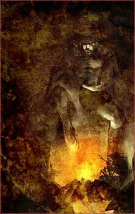
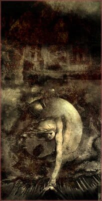
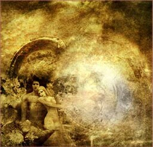
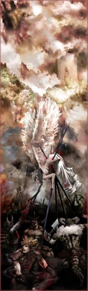
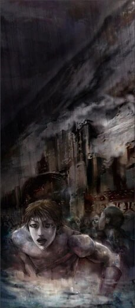
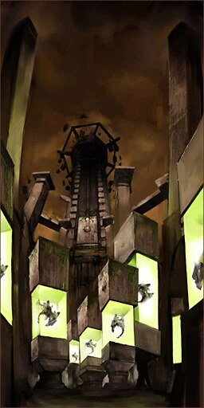

Prologue: By the Bonfire

He drew a deep breath, inhaled the smoke, and let it out slowly. Most of his face was hidden under a thick, old hood, and behind him there was only pitch darkness. In the dim glow of the pipe it was impossible to see his features.
He introduced himself as a bard - yet no one believed him, as his voice was thick and ragged - and we were suspicious that he traveled the dangerous forest alone.
However, he offered to tell us a story if we shared our meal and the warmth of our fire. We agreed, if only because we couldn't leave this traveler to the cold forest. We made ourselves comfortable by the fire, holding our weapons at the ready in case of danger, and waited for his story to begin. The night was ice-cold, and his low, thick voice carried quietly across the mountain as, setting aside his pipe, he opened his mouth and began to speak.
Episode 1: Genesis

The story I'm about to tell you is about those who we call gods. Listen carefully as this is the true story...
Long ago, in a time before thought, there was only a globe in which all creation was mixed. As there was nothing with which to compare it, the globe was big and small, dark and bright, everything and nothing.
Over a hundred million years, the globe began to grow and eventually two powers slowly began to form within. As they grew, the powers developed consciousness and ego and separated into white light and darkness. White light formed as female and called itself Einhasad. The darkness formed as male and named itself Gran Kain. These two beings marked the beginning of the entire universe, and all that we know today.
Einhasad and Gran Kain pooled their strength to break out of the globe. In this action the globe was shattered into pieces of all kinds. Some pieces rose to become Sky, some fell down to become Ground. Between Sky and Ground there was Water, and some parts of Ground rose up to become Land.
The spirit of the globe was named Ether, also shattered with the breaking of the globe. This brought the various animals and plants into being. "Genesis Creature" was formed of this spirit, and giants were the best of this kind. They were known as the Wise Ones, for their intelligence was as great as their strong bodies. The giants promised to keep faith in Einhasad and Gran Kain, as it was the actions of the two gods that created their life and world. Einhasad and Gran Kain were satisfied with the giants and appointed them to be the masters of all living creatures. This was before death and true paradise existed.
Einhasad and Gran Kain gave birth to many god-children between them. The first five of these children were empowered with the authority of the earth. The eldest daughter, Shilen, was in charge of water. The eldest son, Paagrio, controlled the fire, and the second daughter, Maphr, controlled the land. The second son, Sayha, became master of the wind. For the youngest, Eva, there were no elements remaining, so she created poems and music. While the other gods were busy with their responsibilities, Eva wrote poems and serenaded them with music. And thus the era of the gods began and there existed no place on earth unknown to the gods.
Episode 2: Creation of Races

Einhasad was goddess of creation and created forms using her own spirit. Her children used their own powers to create life from these forms.
Shilen instilled the spirit of water into the first form that was created. This is how the race of elves was created.
Paagrio instilled the spirit of fire into the second form that was created. This is how the race of orcs was created.
Maphr instilled the spirit of earth into the third form. This is how the race of dwarves was created.
Sayha instilled the spirit of wind into the fourth form. This is how the race of ertheias was created.
Gran Kain was a god of destruction. When he saw the work of Einhasad, he became curious and jealous. He imitated Einhasad and created a form in his own image. Then he went to see Shilen, their oldest daughter, and asked her to instill spirit into the form. Shilen was very surprised and told him, "Father, why do you want to do such a thing? Einhasad, my mother, is responsible for creation. Please do not covet the type of work that is not yours. A creature who receives life from a god of destruction will only bring about disaster."
But Gran Kain would not give up. After much cajoling and persuading, finally he was able to obtain Shilen's consent.
"I will do it then. But I have already given the spirit of water to Mother. So the only thing I can give you is the leftovers." Shilen gave the spirit of stagnant and rotten water to Gran Kain. Gran Kain gladly accepted it.
However, Gran Kain felt that it was not enough to give only one spirit to his creature. So he went to see Paagrio, his oldest son. Like Shilen, Paagrio also warned his father. However, he could not refuse Gran Kain. So he gave the spirit of dying fire to Gran Kain. Gran Kain gladly accepted it.
Maphr also pleaded with her father with tears in her eyes but ended up giving the spirit of barren and contaminated earth to her father. Sayha, in his turn, gave his father the spirit of wild and violent wind.
Satisfied, Gran Kain took everything that was given to him and cried, "Look at the living creatures I am making! Look at they who are born with the spirit of water, the spirit of fire, the spirit of earth and the spirit of wind. They will be stronger and wiser than giants! They will rule the world!'
Gran Kain shouted with great pride to all the world and instilled spirit into the creatures of his own image. However, the result was terrible. His creatures were weak, stupid, sly, and cowardly. All the other gods despised Gran Kain's creatures. Overcome by the shame of his failure, Gran Kain abandoned his creatures and went into hiding for a time. These creatures are called humans.
The race of elves was wise and knew how to perform magic. But they were less wise than giants. Therefore, giants let the elves serve them in politics and magic-related activities.
The race of orcs was strong. They possessed inexhaustible strength and great will power. However, they were not as strong as giants. Therefore, giants let orcs serve them in warfare.
The race of dwarves was skilled. They were good engineers, skilled mathematicians and excelled in fine craftsmanship. The giants allowed them to serve in banking and manufacturing work.
The winged race of arteias was freedom-loving and possessed undying curiosity. Giants wanted to capture and subjugate the free-flying creatures, but as soon as an arteia was locked up in a cage, it quickly lost its strength and died. Giants were left with no choice but to allow the arteias to fly free. The arteias visited the city of giants to give them news from other parts of the world.
Humans could not do any one thing well and thus become slaves to the giants, doing all sorts of menial labor. The life of humans was not any better than that of animals.
Episode 3: War of the Gods

Gran Kain was a free and uninhibited god. However, he made a very great mistake by seducing Shilen, his eldest daughter. They conducted an affair, avoiding the eyes of Einhasad, until Shilen became pregnant. When Einhasad found out, she became enraged. Stripping her daughter of her position as water goddess, Einhasad ordered Shilen banished from the continent. Gran Kain turned his back on the situation, and Shilen was left to deal with her fate alone.
While pregnant, Shilen fled to the East. Deep in the middle of a dark forest, she gave birth -- cursing Einhasad and Gran Kain with each excruciating labor pain.
The babies born of Shilen's horrible labor bore the despair and anger of her curses and became demons. Among them, the strongest creatures were called 'dragons'.
There were a total of six dragons born with curses against the six gods. Shilen was filled with wrath towards Einhasad who banished her, and towards Gran Kain who seduced and then abandoned her. Gathering the strength of her children, she created an army to punish the gods.
The strongest dragons were ordered to be at the front of the army of demons to fight against the gods. Hearing this, Aulakiria, the dragon of light, looked at Shilen with sad eyes and spoke.
"Mother, you don't know what you are doing. Do you really want the eternal destruction of the gods? Do you really want your father, mother and siblings to fall down on the ground in pools of their own blood?"
Her appeal did not change Shilen's mind.
At last, the demons invaded the palace where the gods lived, and a fierce battle began. The six dragons destroyed everything in the gods' palace. Even the gods were intimidated by the incredible power of the dragons. The battle seemed destined to continue forever. Yet, if the war did not stop, the world would cease to exist, and all living things would be annihilated.
Numerous god's messengers and demons were destroyed or vanished. Every day there was thunder and lightning, as strong forces clashed violently in the sky. Giants and the other living creatures of earth trembled as they observed the terrible fight in the sky.
The fierce battle continued for several years, and eventually the balance gradually tilted towards one side. In spite of suffering many injuries, Einhasad and Gran Kain, had stronger powers and destroyed many demons.
The dragons kept fighting, though they were deeply wounded and riddled with scars. Their fatigue became more and more apparent. After a time, it seemed like the war would come to an end with the extermination of Shilen's army. In the end, the dragons spread their wings and flew to the earth to escape. The surviving demons followed. The gods wanted to kill the retreating army. However, due to their own injuries, all they could do was watch as the dragons and demons departed.
As Shilen's children perished one by one and lost the war, Shilen could not stand her sadness. She invented The Underworld and ruled over it.
Episode 4: The Great Flood

After Shilen was gone, Eva inherited the authority to rule over water. But Eva had a timid nature and after witnessing her elder sister's terrible demise and the war among gods, she became even more fearful. In order to avoid the weighty responsibility that fell to her, she dug a tunnel at the bottom of a lake and hid.
With no goddess to rule over them, the spirits of water were without purpose and began to wander aimlessly. Too much water flowed to one place and formed a great marsh. Water did not flow at all in another place and there a desert formed. Often times, part of the continent suddenly sank into the ocean or a new island suddenly sprang out of nowhere. In some places, it rained day and night until everything except the tips of the highest mountains were submerged.
Where any piece of land remained above water, all the living creatures flocked to preserve their life and the piece of land fell to pandemonium. Both on the continent and in the ocean, all the living creatures were suffering. On behalf of all the living creatures, giants petitioned the gods for help.
Einhasad and Gran Kain searched everywhere in the continent and finally found the lake in which Eva was hiding.
"Eva, look what happened because you avoided your responsibility. You are destroying the harmony of this continent that we created with all of our efforts. I will not tolerate it if you continue to disobey me." Einhasad was so enraged that her eyes burned bright with roaring flames.
Due to the floods, countless giants and living creatures departed to Shilen's world. This made Einhasad very envious of Shilen. Trembling with fear, Eva ended up surrendering to her mother. When Eva took over her authority to adjust the waters, the disasters gradually ceased. However, it was impossible to restore the continent that lay in ruins.
Episode 5: Challenge of the Giants

The giants began to harbor skepticism in their hearts. Gran Kain had already proved his own stupidity by making a lowly living creature called human. In addition, due to Gran Kain's lewd conduct and Einhasad's jealousy, The Underworld was created and various demons came into existence. Due to Eva's weakness and incompetence, the continent was badly out of shape. Seeds of doubt began to sprout in the minds of giants. Did such gods deserve their worship?
Giants could ride chariots made with their own hands and freely go in and out of the gods' palace. They could use magic to lift up an island and live in the air like gods. They could prolong their life span until it seemed like they would live forever. The giants began to think that their power was equal to that of the gods. In spite of their wisdom, they became excessively arrogant.
And thus the giants set out to become gods.
They began to experiment by modifying living organisms to create new forms of life. Giants called the magic to make such miracles possible 'science.'
Intoxicated by power, the giants organized a strong army to fight against the gods despite the failure of Shilen, the six dragons, and numerous demons in the same task.
The gods saw the preparations and were enraged. Einhasad, who claimed the sole right to create life, was speechless with fury. She swore to destroy all giants along with the continent and the entire world. Gran Kain pleaded with her to remain calm.
"Much as you are the Mother of Creation," he argued, "so is destruction my responsibility. You know too well what I had to go through when I coveted your task.
I will punish the giants for their arrogant conduct. Yet if you still want to destroy the entire world, I will fight you with everything I have." Gran Kain did not want to allow the destruction of the continent no matter what and Einhasad was greatly offended by Gran Kain's intervention. However, as they were of equal status, she could not stop him.
Einhasad compromised in the end. In order to punish the giants, she decided to borrow Gran Kain's hammer - known as the Hammer of Despair. Due to its great destructive power, even Gran Kain had never used the weapon. Yet in her fury, Einhasad lifted the hammer high above her head and brought it down in the center of the giants' city.
Episode 6: End of Ages
Only when red flames rained from the heavens did the giants realize that they had committed a foolish error. They reached up with their combined strength to thwart Einhasad's angered delivery of the Hammer of Despair. Yet even with the giants' might, they merely altered the direction of the hammer slightly, and it still grazed the cities as it descended upon the world.
That was enough to destroy the world's greatest city; countless giants and other races were instantly crushed. A large hole was left in the earth and immense waves covered its surface. In the end, almost all the giants had perished.
Those giants who managed to live fled to the east to avoid Einhasad's anger. Their route paralleled that of Shilen in her earlier flight. Einhasad continued to hunt them down and burned the giants to death one by one with bolts of lightning. The remaining fugitive giants trembled in fear and prayed to Gran Kain.
"Gran Kain, Gran Kain! We have realized our erroneous ways. Only you can halt the rage and madness of Einhasad. Do not let us perish, we who have been born from the same place as yourself, we who are the wisest and strongest creatures in the land!"
Gran Kain suddenly felt an overwhelming sense of pity for these poor creatures and thought that the giants had suffered enough for their transgression. He lifted up the deepest waters of the southern seas and blocked Einhasad's path.
Einhasad shouted in anger, "'What is this?! Who dares to interfere with me?! Eva, my beloved daughter, rid the water that blocks my path this instant or be ready to follow in the footsteps of your elder sister!"
Eva feared Einhasad and immediately returned the waters to the sea. Einhasad continued to chase the giants, killing them one by one. The giants cried out to Gran Kain again.
"Gran Kain! The mightiest of the gods! Einhasad continues to chase us, determined to exterminate us! We pray to you, please have mercy and save us!"
Gran Kain lifted up the earth on which the giants stood. The great cliff hindered Einhasad's chase and she shouted in a loud voice.
"Maphr, my beloved daughter! Who dares to interfere with me?! Set the land down this instant. Or be ready to follow the path of your sister!"
Fearful at these words, Maphr tried to lower the earth, but Gran Kain stopped her.
"Einhasad, why do you not give up? The whole land knows your anger and trembles before your wrath. The wise but foolish giants feel their wrongdoing to their very core. See for yourself! The race of proud and noble creatures -- that at one time ruled the earth — are hiding on a narrow strip of land and shaking in fear as they seek to escape you! No longer can they challenge the gods. This place will eternally be the giants' prison. Calm your rage, your revenge is complete."
Einhasad continued to rage, but she could not act against Gran Kain's wishes -- he possessed strength equal to her own. She decided that, as Gran Kain had said, it would be better to leave the giants on that narrow, barren land to forever repent their sins rather than to kill them all. She ended her hunt and returned to her home.
Afterwards, Einhasad rarely interfered with happenings on Earth, as she had been deeply disappointed in the Earth's beings. Gran Kain also agreed not to show himself on Earth. The age of the gods was coming to an end.
Episode 7: A Return to the Campfire
The stranger paused in his story.
Enthralled by the tale, we had not moved while he related the history of our world. His voice, though soft, penetrated deep into our heads -- as if magical in nature. The myth he spoke of was completely different from that which we knew, yet none protested. We, the most seasoned warriors in all the lands, were drawn to the stranger and yet on-edge, nervous, even fearful of this mere man. When a nearby owl took flight, we flinched at the sudden flapping of wings.
The stranger chuckled, raised the smoldering pipe to his lips, and continued his story.
"Do not automatically cast aside my story because it is different from those you know of the gods. There is no proof that your priests are closer to the truth than a wandering poet. The history of the gods is the will of the gods, not that of humans. And thus, how would mere priests know the truth? Listen again as I continue. This is the story of the land after the gods' disappearance. It is your own history."
Episode 8: The Aftermath
The world fell into great turmoil following the sudden disappearance of the giants. Accustomed to the rule of the giants, the elves, orcs, dwarves and humans were faced with the harsh reality of fending for themselves. On top of this frightening new change, the world in which they lived lay ravaged with the strike of the Hammer of Despair. Many died during the disasters wrought by Einhasad, and many more died in the ensuing confusion and chaos. The races of the earth pleaded fervently to the gods for salvation, but the gods did not answer.
First to take control of the situation were the elves, as they were the race responsible for politics during the time of the giants. The elves were successful in unifying the races and continued on with their lives. But as time passed, it became apparent that the elves did not have the same capabilities to rule that the giants had. The first to stand against the elves were the orcs.
"Are the elves stronger than we? No! Do the elves have the right to rule over us? No! We cannot bear that those who are weaker than we dare to stand above us!"
The military might of the orcs was powerful and, having lived only in peace, the elves were no match for the proud and fearless orcs. The majority of the land became orc territory in an instant and the elves were driven to a corner of the continent. There the elves sought aid from the dwarves who, with their great wealth and superior weapons, would stand a chance against the orcs.
"Race of the earth," the elves cried, "Come to our aid. The violent orc hordes persecute us with their sheer might. Come -- let us fight them together."
But the dwarves coldly refused to aid the elves. To their eyes, the world had turned in favor of the orcs. There was no reason for the pragmatic dwarves to side with the weak. The elves were enraged, but could not sway their decision.
The elves decided to seek help from the race of the wind - the arteias. Their reconnaissance skills and aerial attacks would be sufficient aid for the elves to triumph over the orcs. An elven delegation traveled to the ends of the earth to seek the help of the arteias.
"Race of the wind, come to our aid! The barbarian orcs are oppressing us with their sheer might. Let us join together and teach them their foolishness!"
But, as always, the arteias were not interested in the politics or wars of the earth. They determined to take neither side and hid themselves deeper in the inlands. The elves despaired.
"Alas, no one will aid us! Is this the end of our kind? Are the filthy orcs to take over the lands and claim every glory and wealth as their own?"
Episode 9: A new Alliance
Turned down by the pragmatic Dwarves and neutral Arteias, the Elves were left with no allies to wage war against the orcs. Left to bemoan their fate, the Elves were surprised by the appearance of a stranger among their ranks. The stranger knelt before the Elven king, who peered closer to discover the stranger was a representative of the Humans. The stranger wore a crown made of tree branches.
"What is it, leader of the lowly humans?" the Elven king asked. "Do you come to mock our plight?"
The Human bowed his head and spoke, "No, wise king. We come to see if our feeble forces may be of any assistance."
The Elves rejoiced, for though the humans were foolish and weak, their great numbers could be of help in battle.
"Very commendable of you, Human king," the Elven king acquiesced. "Insignificant beings you may be, but your devoted loyalty and willingness to sacrifice your lives for us is admirable. Go forth in battle to victory and you shall gain standing directly beneath the elves."
The Human king bowed deep before the Elven king, then lifted his head, facing his Elven counterpart. "Most noble Elven king," he spoke, "We Humans have but one request to make before we battle for the glorious victory of the Elven race. Our powers are too weak. Our teeth cannot even scratch the skin of the Orcs and our nails are useless against their muscles. We beg of you, grant us the power to stand against them. Teach us the knowledge of your magic."
This bold proposition left the elves shocked and infuriated. Teach magic to humans? Never! They gestured, invoking the spells to turn the human to a heap of ashes, but the Elven leader Veora interceded. She felt the request was no threat and should be honored. The Humans were too weak, and it would be doubtful that they could beat the Orcs without help. And with their inferior minds, the humans would be no threat were they even able to learn magic. And thus she made a stand that would later cost her life.
The Humans quickly absorbed the ways of magic, learning much faster than the Elves had anticipated. The Human bodies, though not as strong as those of Orcs, had been strengthened through constant labor and infighting among their kind. They were adept with their hands and could skillfully wield weaponry, and more than anything else, their numbers were huge and impressive. In a short amount of time, the Human army became a formidable force.
Episode 10: An Ally Turns Foe
The human-elf alliance gradually began to overtake the orcs. As the tides of battle turned in favor of the alliance, the dwarves shifted allegiance from the orcs and began to craft battle supplies for the humans. With the stronger armor and sharp dwarven weapons, the humans could now defeat the orc army without the aid of elven forces.
The elves grew uneasy, even as the alliance victories grew in number. They could sense the humans growing stronger and beyond their control. Yet the elves did not allow their uneasiness to grow to concern, for they could not imagine that the lowliest of them all - the human trash - could conceive a revolution. And with final victory over the orcs within reach, the elves had no time to dwell on worries of the humans. The humans continued to learn higher forms of magic, and eventually the war ended with the victory of the human-elf alliance. The orcs were forced to sign a humiliating peace treaty and quickly retreated to the safety of their lairs in the northern parts of Elmore.
The leader of the orcs laughed as he departed, "Foolish elves. This victory is not yours, but that of the dirty humans. How do you propose to control these monsters of your creation?"
True to his bitter words, the elves now faced a new threat - the humans. But after the long battle, the elves were left too weary and weak to fight. In contrast, the humans with their new powers of magic, were strong. And thus, the humans rose up against the elves.
Too late, the elves realized they had taken under their wings the offspring of dragons. A fierce battle of magic versus magic once again shook the land. But the elves were too weak to suppress the forces of the humans. The elves were slowly pushed back until they were forced to retreat to the safety of their forest. From their secure position, they prepared for the final clash against the humans. Elven magic was strongest in these woods and they sought to use this advantage to victory.
The elves dug deep dungeons that quickly echoed with the clanging of swords and shouts of battle. But the ultimate victors in the three-month siege were the humans. Neither elven pride, nor the magical powers of the elven woods, nor even the superior magic of the elves could stand against the endless stream of human armies. The elves suffered great damage and eventually escaped deep into the forest. In retreat, they cast strong barriers around their woods to prevent the trespassing of humans and other races.
And thus, humans became the conquerors of all the land.
Episode 11: A return to the Campfire
The stranger looked up, his latest story completed.
The tale was different from any we had heard, yet strangely familiar. The beautiful elven maiden in our company sat quiet, tears brimming in her eyes.
The night had deepened as the stranger spoke and now the cries of wild creatures were nowhere to be heard. The wind had ceased to rustle the tree branches overhead, and even the water flowing in the nearby stream seemed muted and soft. Only the sound of our breathing and the crackling of the burning campfire rang out through the night. It seemed as if all nature around us held its breath to listen close to the story told by the campfire.
We leaned in close as the stranger, clearing his throat with a low rumbling cough, began again.
"So. Is it not ironic that the lowest creatures of all, the humans, ultimately attained ownership of the land? But that is the result of human will. Even the gods did not imagine that humans would ever become rulers of the earth.
"Now, I will tell you the tale of the most brilliant human kingdom that ever existed. This is the story of the humans who walked the same path as the giants."
Episode 12: History Rewritten
During the long battles against the orcs and elves, the humans began to form primitive kingdoms among their numbers. The central group was composed of the Athena clan and humans skilled in magic. They protected their numbers with their power, kept order through threats, and occasionally became involved in small and large battles.
Order was resolved quickly when the Athena leader, Shuniman, united the regions currently known as Aden and Elmore. He called his kingdom Elmoreden and enthroned himself as emperor. The tree branch crown adorning the brow of his ancestors became a gold crown with glittering jewels to set upon his brow. He became known as a presence nearly equal to the gods in the lore of his followers.
Emperor Shuniman worried over the life limitation of the humans. The fact that Gran Kain, god of death and destruction, was their creator gave the humans an inferiority complex. Additionally, the tales that they were created from the leftovers of other races was deeply humiliating to these new rulers of the land. For their new kingdom, they needed a new myth; a new history that would prove them noble beings.
Eventually, and through large-scale religious reform, Shuniman made Einhasad the goddess of humans instead of Gran Kain. Myth and history were changed and those practicing black magic, as well as the followers of Gran Kain, were persecuted. The religious reform continued for generations and eventually all humans believed that Einhasad, the goddess of good, was their creator and Gran Kain was simply the god of evil. When learning of this, Gran Kain laughed in acceptance.
"Even if they do not serve me, I will not be angered. But foolish humans, no matter how you try to cover the sky with your hands -- is the sky truly smaller than your grasp?"
Episode 13: Elmoreden and Perios
While Emperor Shuniman and the Elmoreden kingdom grew and prospered, the Gracia region across the sea still rumbled with turmoil. The geography of Gracia was varied and dangerous and while many human groups battled for control, no strong power had emerged to unify the government. Small kingdoms dotted the landscape, claiming parcels of land as their own and conducting minor skirmishes and greater battles as they struggled for dominance.
The day came when Elmoreden's strong army invaded the land through the western sea bridge and the kingdoms of Gracia were forced to ally in their own defense. Much of the land's royalty and aristocracy were slain in the process. The surviving aristocracy grew in power. In the end, the Elmoreden invasion was repelled, yet it served to create a foundation for a unified kingdom of Gracia. This kingdom was named Perios.
Thereafter, Perios and Elmoreden became locked in an ongoing struggle for domination. Elmoreden, which had first established a unified kingdom and possessed great military power, was far superior. But Perios had advantages of its own. First, the sea separating the kingdoms limited Elmoreden's pathways to attack. Also of great importance, the people of Perios possessed powerful relics left behind by the giants that could be used to their military advantage.
Even with their overwhelming might, in the end the military of the Elmoreden kingdom could not conquer Perios.
Episode 14: Beleth and the Ivory Tower
The kingdom of Elmoreden was home to the Ivory Tower, an institution for learning magic. The mages working within the Ivory Tower labored to recover, study, and improve upon the magic of the ancient giants. The magical prowess of the tower's scholars was great, and at one time their influence in the kingdom was near that of the Elmoreden emperor.
Among those from the Ivory Tower was Beleth, the strongest mage of all and one of the greatest geniuses to ever walk the earth. He became obsessed with the magic of the giants and managed to acquire nearly all of their strengths. But the power of the giants was a cursed power unfit for humans, and having attained it, Beleth's ambition and thirst for control grew rampant. Alarmed, the kingdom and the mages of the Ivory Tower combined forces to rid themselves of Beleth. But Beleth held extreme strength and power in the dark arts.
Finally, the Ivory Tower magicians used forbidden black magic to succeed in suppressing Beleth's powers just enough to trap and seal him in the dungeons below the tower. Yet despite the knights and magician's guarding the seal, Beleth succeeded in breaking the seal and escaping. He fled to Hellbound Island to recover his strength and continue in his ambition to conquer the land.
The black magic cast to trap Beleth had another lasting effect. The southern portions of the region now known as Gludio were laid waste by the black magic, and many humans were killed when the spells were cast. The kingdom blamed this on Beleth and spread the word that Beleth was a devil among men.
Episode 15: Elven Discord
A great change occurred in the Elven woods around this time. Having lost control of the continent to the Humans, the Elves gradually lost their confidence. They all but forgot their ambition to rule the land and became content with their peaceful lives in the woods.
There was a group known as Brown Elves who were dissatisfied with the complacency of the Elves. Possessed of a strong ambitious streak, they insisted that battle with the Humans must continue - even if it meant the use of banned black magic. However, this stance met with violent opposition from the other Elves.
During this time, a Human magician appeared among the Brown Elves and, approaching their leader, spoke.
"King of the Brown Elves - you desire power. But the weak Tree Elves and their supporters fear you attaining the great power you deserve. They only worry about whether you will attack them or bring on even greater plague by provoking the Humans. It is those weak thoughts that have created the current weakness in the Elven race."
The Brown Elven leader responded warily, "Who are you, Human magician? What goal do you have to fool us?"
"My name is Dasparion and I am a mere magician. But I possess the strength that you desire. I can help you acquire your ambitions in return you must give to me that which I desire."
"That which you desire? And what may that be?"
"Your youth. The secret to eternal life." A slight smile touched the corners of Dasparion's mouth. "Though I may be skilled in magic, I am still Human and my lifespan is not even one hundred years. So, King of the Brown Elves, what is your decision? We can help each other attain what we desire."
Seduced by the powers of the black magic that Dasparion possessed, the Brown Elves accepted his proposition and learned the dark arts under his tutelage. Dasparion in turn acquired the knowledge of immortality and left the woods satisfied.
Learning of these events, the Elves banished the Brown Elves, who had abandoned Einhasad and came to follow Gran Kain. A battle ensued among all Elves. The Brown Elves, acting on a plot of Dasparion's, used a deadly spell to annihilate the Tree Elves. But the Tree Elves, with their dying breath, laid a curse upon the Brown Elves. The curse rotted the woods of the Brown Elves and they became a race of darkness. Thereafter, Brown Elves were known as Dark Elves.
Episode 16: End of a Golden Age
The golden age of Elmoreden came about a thousand years after its establishment, during the reign of Emperor Baium. With great charisma and leadership skills, Baium created the strongest army in the history of the kingdom. This army drove the orcs, who had considerable influence in the northern parts of Elmore, into the black woods, known later as the Orc Kingdom. In addition, Baium's army led repeated attacks against the kingdom of Perios, and eventually occupied the southern parts of Gracia.
In his later years, Baium lost interest in conquests and used his kingdom's forces to begin construction of an elaborate tower rising into the clouds.
"My name inspires fear in every corner of the continent. Tens of thousands of lives can be lost or saved by the movement of my hand. My power is absolute. That I can only have this power for a few decades, I cannot bear! No -- I shall obtain everlasting life from the gods and rule my kingdom forever!"
The magnificent tower of Baium's design took thirty years to construct. He intended to use the tower to climb to the residence of the gods and obtain the secret of everlasting life. When he climbed the tower, the gods objected to his plans and gave him this response:
"Child of lowly humans, and a lowly human yourself: You dare to soil our abode for your own everlasting life? Have you learned nothing from the lesson of the giants? Very well, if eternal life is what you desire, we shall grant you your request. But you shall never leave your tower."
Having brought the fury of the gods upon himself, Baium was trapped for all eternity at the top of his tower. After the sudden disappearance of the emperor, a fierce competition broke out among members of the royal family as each vied for ascension to the throne. Numerous aristocrats also seized the opportunity to stake their claim to the throne, leaving the entire kingdom of Elmoreden enmeshed in internal conflict. The costs and labor requirements for construction of the tower had already weakened the kingdom. The added conflict and backbiting over the vacant throne was the last straw. The resplendent kingdom of Elmoreden, powerful on the continent for more than a thousand years fell into rapid decline. Within a mere twenty years, the kingdom was in shambles.
Episode 17: A Return to the Campfire
The story, traded for a meal and a warm fire, continued to unfold in an unpleasant direction. We did not know the identity of this stranger, nor did we know why he was telling us these tales. Yet we listened, a captive audience, unable to look away or move as if an unseen force kept us pinned to our seats.
The man acted as if we were not even there. He gathered dry twigs and tinder from around his feet and tossed them into the dying fire. The flames, which had nearly died out, blazed up with a renewed vigor. The man did not even glance in our direction as he began to speak again.
"My tale is now nearly at an end. The story which I am about to tell is a familiar one - that of the power struggle of the Humans which continues to this very day. This is the story of the continent after the fall of Elmoreden."
Episode 18: Battle for the Continent
While the demise of Elmoreden worked to slow the fall of the Perios kingdom, nothing could stop the oncoming plagues from the Gracia regions to the south, nor the devastating cold that swept through from the north. Like Elmoreden before her, Perios disappeared into the dusty tomes of history.
After the fall of these once-great kingdoms, the land was embroiled in a horrific turmoil, and the dark times evoked memories of the aftermath of the Great Plague. The Human aristocracy fought amongst each other for supremacy and some even granted lands to non-humans in exchange for military might. The Orcs seized this opportunity and gaining a foothold, brought their strength to bear. Reorganizing their armies, the Orcs once again waged their campaign to dominate the continent. Their armies were mighty and they soon occupied the northern parts of Elmore, but fighting between the noble orcs and the lowly orcs weakened their power.
Amidst the conflicts, the Elves could do nothing but fight for their own lives in the endless battle against their Dark brethren. And the Dwarves were no match for the rampaging Orcish army and were easily pushed aside.
In this time, a dominant Human faction emerged, known as the Elmore kingdom. Their claim to be direct descendents of the Elmoreden emperor, whether truth or myth, was widely accepted, for they had the truth of strength and the truth of steel behind their words. The Elmore army clashed with the Orcish army over many terrific battles. The war waged on for many years, costing each side heavily. The armies were evenly matched, for although the Humans outnumbered their enemy, the sheer strength of the mighty Orcish army made for a formidable foe. In the end, however, badly defeated, the Orcs were again driven back to their own lands to bide their time and plot their vengeance. As for the Dwarves, what few remained were banished from the Human continent into the depths of the Spine Mountains.
With its now diminished military force, the Elmore army finally gained control of all the northern lands and marched south in the quest to reunite the continent under the Elmore flag. But unification of the divided continent was not to be. The Oren, the most powerful of the southern kingdoms, fended off the invading army with their strong magicians and well-trained soldiers, and the Elmore could not match the ferocity of an army out to defend its land.
The various southern kingdoms prospered under the protection of Oren and together began to take the form of a nation. These kingdoms maintained balance amongst themselves, and grew strong and prosperous.
Episode 19: The Rise of Two Kingdoms
The many wars lasted through numerous generations, and out of the chaos, Gracia became the first to thread together the strands of unity. A man called Paris, with his military prowess and tremendous strength brought glory to his people, winning many battles and claiming lands in the name of Beheim.
Paris achieved legendary status when he and his army faced off against the vicious highlanders of Quaser. In a desperate fight against Tor, Quaser's mightiest warrior, Paris struck a decisive wound. Having never before lost a fight, legend has it that the wounded Tor uttered, "Can you really be Human? Such strength, such speed!"
Standing before his enemy, Paris looked out over the battlefield and replied, "I desire that much to unify this land... Brave warrior of the North, pledge me your loyalty, and together we shall conquer all who oppose us."
Thus Paris led the White Hawk Knights, the Wind Knights, and now the newly allied highlanders across the lands of Gracia and achieved many military victories. The lands of Beheim swelled to more than five times its original borders, and as for Paris, he staged an uprising against the royalty and ascended the throne.
Meanwhile, the southern lands were also bursting with activity and many were concerned with news of the turbulent tidings from Gracia and Elmore. A charismatic leader named Raoul appeared, and led his own campaign to amass a personal force under his flag. A fiery speaker, Raoul defeated those who opposed him not with weapons but with words. One of his speeches usually went like this:
"Lords of the land! Do you not see what is happening beyond our borders? Formidable enemies march down on us as we speak! The kingdom of Elmore has long sought our wealth and our lands and is only waiting for the right time to strike. If the Gracia region across the sea should also decide to move, we will be overrun! There is no other option than to join our armies together under one flag and to prepare for war."
Raoul used persuasion to steadily tie the southern lands together. But the perceived threat of the Elmore kingdom was not as great as it appeared, as they were too busy dealing with the mass uprising of the orcs to focus any attention on Aden.
Nonetheless, Raoul first combined forces with his loyal ally Innadril, and together these lands established the kingdom of Aden. Unlike Paris, Raoul waged a bloodless campaign and he easily progressed west to acquire Giran and Dion.
It was in Oren that Raoul first met upon resistance to his plan. Oren claimed itself to be the leader of the southern lands and did not accept any leader other than their own. Eventually, the two kingdoms came to blows, but the Aden kingdom maneuvered a remarkable victory. The Gludio kingdom, witnesses to the might of the Aden army, voluntarily chose to ally itself with Aden, completing Aden's unification. Thereafter, Raoul became known as the Unification King.
Episode 20: The Heirs to the Land
Soon after the unification of Aden, Gracia solidified its own lands when the last remaining opposition, the Hwuh, fell into the hands of Paris. Paris moved the capital to Arpenino and reorganized his kingdom's structure.
Newly powerful Aden proved themselves a force to be reckoned with in their successful defense against Elmore's advance. However, a new page was turned in Aden's history when tragedy struck Aden with the sudden death of Raoul. Sensing the moment to strike, Elmore repeatedly invaded into the northern lands of Aden. Raoul's successor, Trabis was able to fend off the invaders, but he soon passed away from a mysterious illness. The next in line for the throne was a sixteen-year-old boy named Amadeo.
Upon hearing the news, Paris exclaimed, "The heavens are aiding our Gracia kingdom! A sixteen-year-old king? That will be the downfall of the Aden kingdom!"
But Paris gravely underestimated the young Amadeo. The boy king succeeded in brilliantly defending a large-scale Elmore attack and Paris sensed his opportunity to conquer Aden was slipping away. Ignoring the advice of all, including his trusted right hand man Dillios, Paris launched a massive attack on Aden by land and sea.
The results were disastrous.
Asteir, the ousted king of Elmore, had joined forces with Aden, his father's long time enemy.
"Have you no shame? You should fall on your own sword for standing at the side of your father's enemy!" shouted Paris in anger.
Asteir brushed off the comment and replied, "The cub can be taken care of later, but for now you are my main prey."
The battle of Giran proved to be the turning point in the war, and the Gracian troops, beaten and demoralized, retreated to their own lands. The failure of the Aden invasion left a deep wound in Paris's pride, for he had never known defeat. Eventually, Paris became ill and died soon after.
The Gracian heir was a frail man named Carnaria, whom many deemed unfit to rule the kingdom. In opposition, Cucarus challenged Carnaria's claim to the throne. Backed by Paris's once-trusted advisor Dillios, Cucarus gained popularity with the Gracian people, and he and Carnaria split the kingdom into two factions. North and South Gracia became bitter enemies and their struggle would consume all their energies.
This was the best news for Amadeo, and he used the break in fighting to strengthen the Aden kingdom. Through his efforts, Aden, Elmore and Gracia entered into a peace treaty and an uneasy age of peace came to pass.
Episode 21: Epilogue
When the man had finished his story, light had begun to creep into the dark sky. The long night had passed and dawn was coming. Nothing remained of the fire but smoldering ash. The storyteller lit his pipe once again, and took a contemplative puff.
"So my story comes to an end for now. As time passes, maybe the story will continue? Who knows, perhaps someday your names will be in my story?"
The morning sunlight came creeping forth and I could sense an urgency that a significant event was passing me by. It took an effort to find my voice, and I dared to ask, "Who are you? Why do you tell us these stories and, and how do you know them all?"
The man wordlessly rose to his feet. As he stood up, he was growing in size! He seemed a normal man while sitting, but now he was a giant, almost twenty feet tall - casting a shadow over the entire party. His features remained indistinguishable beneath his hooded cloak. Then slowly, subtly, he began to disappear! I can only describe it now as a withering away at the edges, and then suddenly in a gust of wind, he was gone like so much dust.
He did not tell us anything at the time, but now I think I know who he was. Disguising himself to tell histories to the races of the world was exactly the sort of act that would appeal to one who had existed since the beginning of the world. Perhaps even to the one who had created humankind?